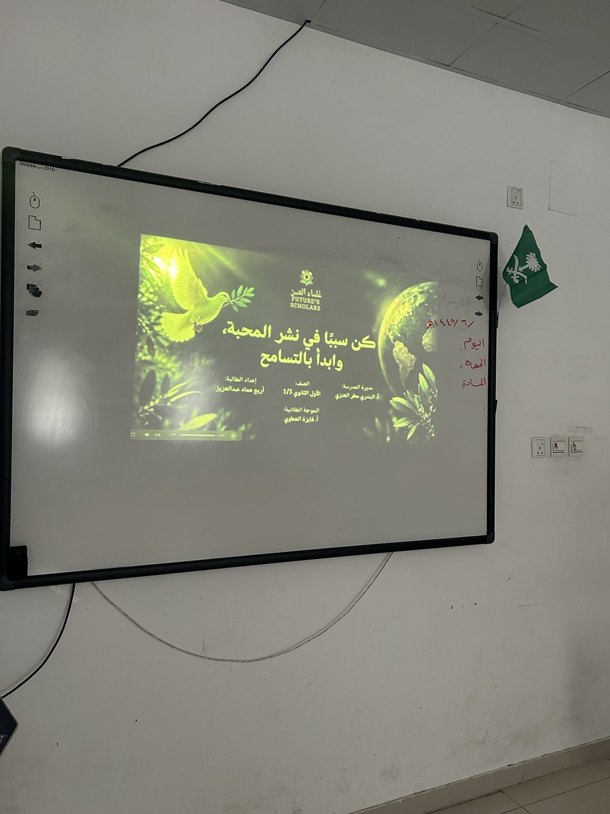
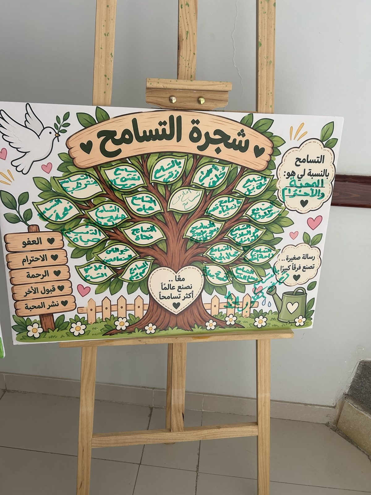
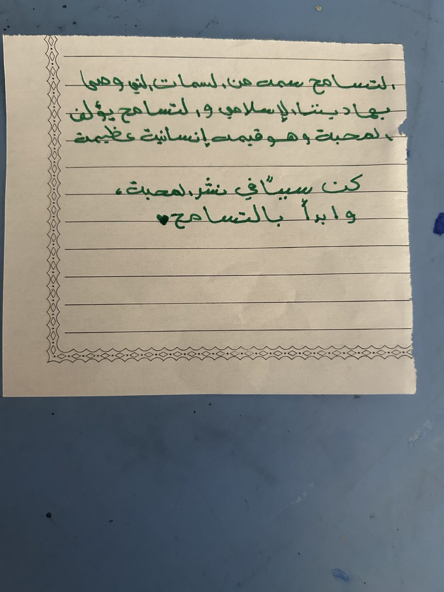
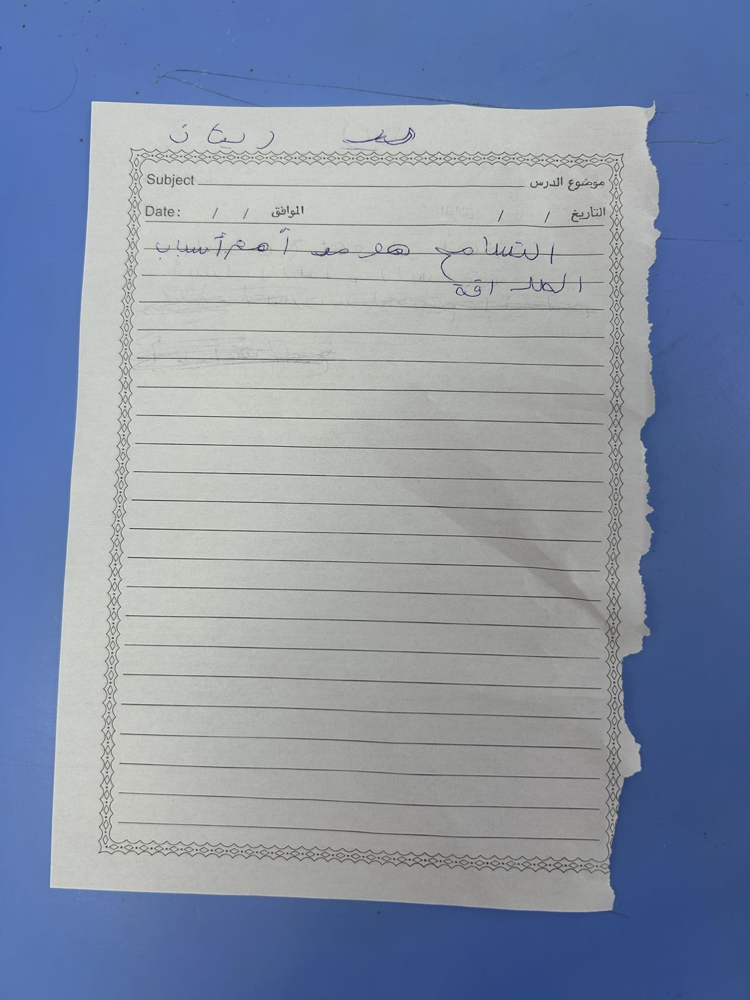

متوسطة وثانوية علماء الغد · حصة النشاط
شواهد برنامج اليوم العالمي للتسامح
مسؤولة التنفيذ:
بشرى العطوي
المجال:
المجال الاجتماعي والقيمي
عدد المستفيدات:
١٢
تاريخ التنفيذ:
الأربعاء ٨/٦/١٤٤٨هـ
العرض التقديمي عن اليوم العالمي للتسامح

عرض «كن سببًا في نشر المحبة، وابدأ بالتسامح»

لوحة «شجرة التسامح» بعبارات الطالبات

عبارة كتبتها طالبة: «كن سببًا في نشر المحبة، وابدأ بالتسامح»

عبارة طالبة: التسامح من أهم أسباب الصداقة